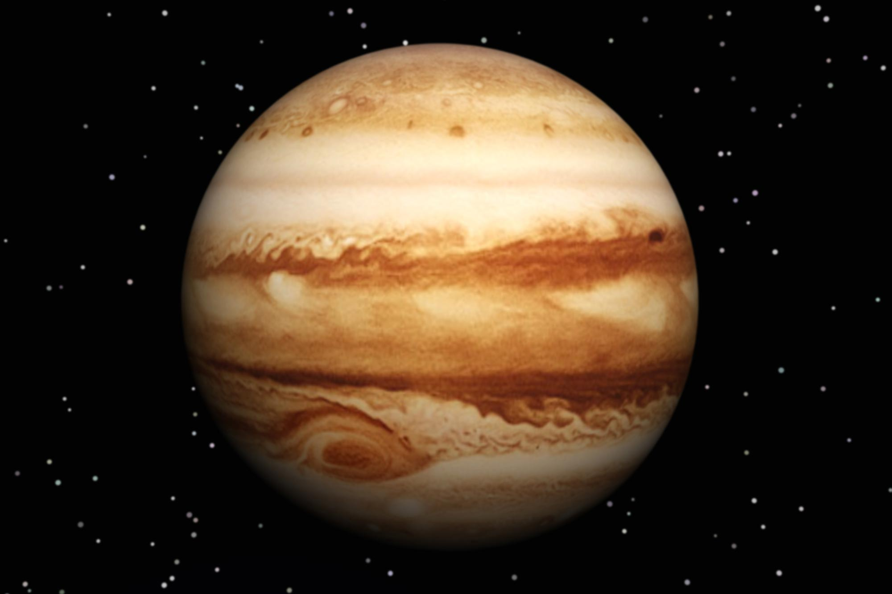

<!DOCTYPE html>
<html>
   
</html>
<head>
        <title> Jupiter </title>
        <link  href="css/styles.css" rel="stylesheet" type="text/css" />
   
</head>
            <style>
                  body {
                          background-color: #382E30  !important;
                  }
            </style>
    </head>
    <body style="background-color:black;  color:white">
        <header>
            <p align:"center">
            <h1> Jupiter </h1>
            </p>
        </header>
        <hr />
        <br>
        <nav>
    </body> 
            <p align:"center"></p>
            <a href="index.html">Home</a>
            <a href="earth.html">Earth</a>
            <a href="jupiter.html">Jupiter</a>
            <a href="mars.html">Mars</a>
            <a href="mercury.html">Mercury</a>
            <a href="venus.html">Venus</a>
            <p align="center">                
            
            </p>
            <br>
            <p> Jupiter is the fifth planet from the Sun and the largest in the Solar System. It is a gas giant with a mass one-thousandth that of the Sun, but two-and-a-half times that of all the other planets in the Solar System combined. Jupiter is one of the brightest objects visible to the naked eye in the night sky, and has been known to ancient civilizations since before recorded history. It is named after the Roman god Jupiter. When viewed from Earth, Jupiter can be bright enough for its reflected light to cast visible shadows, and is on average the third-brightest natural object in the night sky after the Moon and Venus.

Jupiter is primarily composed of hydrogen with a quarter of its mass being helium, though helium comprises only about a tenth of the number of molecules. It may also have a rocky core of heavier elements, but like the other giant planets, Jupiter lacks a well-defined solid surface. Because of its rapid rotation, the planet's shape is that of an oblate spheroid (it has a slight but noticeable bulge around the equator). The outer atmosphere is visibly segregated into several bands at different latitudes, resulting in turbulence and storms along their interacting boundaries. A prominent result is the Great Red Spot, a giant storm that is known to have existed since at least the 17th century when it was first seen by telescope. Surrounding Jupiter is a faint planetary ring system and a powerful magnetosphere. Jupiter has 79 known moons, including the four large Galilean moons discovered by Galileo Galilei in 1610. Ganymede, the largest of these, has a diameter greater than that of the planet Mercury.

</p>
            <div></div>